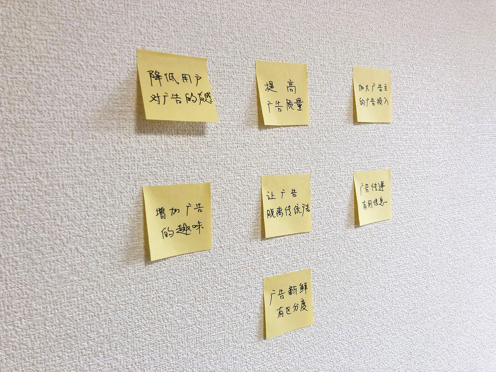
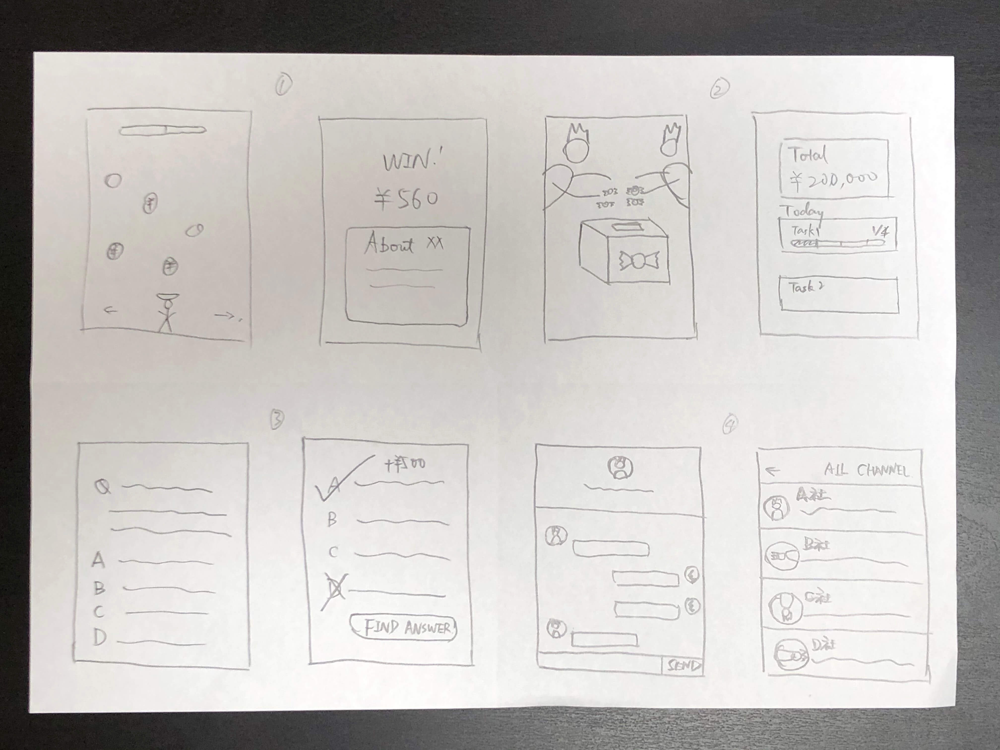
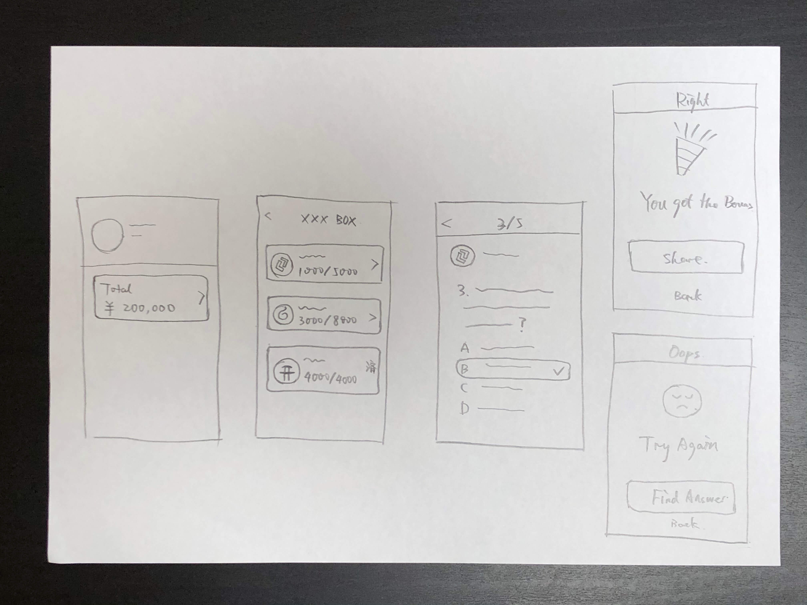

Make ads more than ads - Airdrop Q case study
In the early part of 2018, the Coinview App was in a very good upward momentum. After the basic functionality related to cryptocurrency quotes was built, the team decided to start experimenting with adding profitable features. The first thing that was on the agenda was in-App advertising, and after briefly trying it out, we found that the conversion rate of the ads was not satisfactory. Together with other team members, I worked hard to solve this problem.
In this case study, I've deliberately obfuscated some data.
My Role
As the lead designer of the App, I worked with the team leader to analyze the problems the product is facing, define the direction to solve them, challenge various solutions, present the design to the team through sketches and prototypes, and finally completed the features to go live successfully.
Methods adopted
- Data Analysis
- HMW Method (How Might We)
- Success Metrics & Signals
- Solution Sketch
- Prototype
Context

The Coinview App was launched in October 2017 and through rapid iteration and user-friendly experience, it quickly captured a large chunk of the cryptocurrency market. At the time, it was the golden time of the cryptocurrency market, with the price of Bitcoin reaching its highest point - 20,000 Dollars - at the start of the new year(though the bubble subsequently collapsed). The market was in a state of extreme excitement and activity. After 3 months of rapid iteration, the team needed to maintain continued efficiency, so the product strategy began to shift towards increasing revenue.
A failed attempt
We started with the simplest way: inserting ads directly into the App.
We tried various forms, including stream ads, pop-up ads, and video ads. But the conversion rate was not as good as we expected, and the revenue was not enough to support further growth of the team.
Problem Understanding and Analysis
We compiled statistics related to advertising and made a meeting to discuss what the problems were. The main problems that the traditional advertising facing are

- The traditional ad formats are styles that users have become so accustomed to and dislike that they will subconsciously filter out the ads in the UI or simply close the pop-up ads.
- Advertisers provide poor quality ads, mostly stereotypical content with limited information to convey to users.
- The cryptocurrency is an emerging market and most users are completely unaware of the content advertisers are offering.
HMW
After identifying the problems, we explored them in depth to try to find more possibilities.
- How might we reduce user's aversion toward ads?
- How might we improve the quality of our advertising?
- How might we make our ads more interesting?
- How might we increase the amount of money advertisers spend on advertising to present better ads?
- How might we move ads out of traditional advertising formats?
- How might we make the ads different from each other?
- How might we make the message of advertising useful?
- ...
After going through the HMW phase, we realized that there was a lot of interest in the option to "Move ads out of traditional advertising formats", and we realized that we shouldn't limit the format of advertising to the ads themselves, but rather look at the problem we wanted to solve in a broader sense: To convey the information from advertisers to users, and get the revenue by the process.
Problem definition
Our GOALS are
- Move ads out of traditional ad formats so that users' willingness to interact with ads rises
- Ensure that the advertiser's message is received by a sufficient number of targeted users
- Assist advertisers in improving the content and quality of their ads
After identifying the goals, we further discussed how to define the success of these goals. Finally, we chose the following metrics as benchmarks for measuring the success of this ad feature.
- Click-through rate on ads
- Total advertising budget of the deal
- Final conversion rate on the advertiser side
Design principles
There are many possibilities to make a traditional ad untraditional, for example, to make the presentation of the ad looks cool like using the latest technology such as AR, or to personalize it for each advertiser and make it well designed.
Combined with the team's own strengths and designer's capabilities, we chose to make the ad an experience where the user experiences the process, feels interesting, and receives information from the advertiser.
I condensed this principle into one word - "interesting" - to guide the rest of the design process.
Sketching/Decision
During this phase, I tried out a variety of possible ideas and turned them into sketches.
- Option 1: Develop an HTML5 game in which users are rewarded by manipulating the characters to collect coins and display advertisers' information on the checkout page.
- Option 2: Prepare a virtual candy box (a concept that already exists in the cryptocurrency market), in which the advertiser adds rewards and the user gets rewards by completing several daily tasks.
- Option 3: A QA format, where the advertiser prepares a question about himself and the user is rewarded for answering it correctly.
- Option 4: Generate an exclusive chat room for advertisers to interact directly with users.
After discussion and analysis, we have chosen Option 3 as the main direction, the problems with the other options are
- Option 1: The game experience is difficult to perfect, requires more visual elements than the team can afford; and a game without gameplay can easily turn users off.
- Option 2: It's not "interesting" at all! Daily tasks to gain rewards can quickly become fatiguing, and the tracking of task completion is not an easy task to handle.
- Option 4: It is difficult to control the process, which may lead to some unpleasant experiences; in addition, it is difficult for users to interact with the advertisers, as mentioned in the question, the users do not know the advertisers very well, which makes it difficult to produce high-quality interactive content, which results in boring.
After summarizing the various sketches, I optimized Option 3 by adding some elements from Option 1 and 2 and re-drawing a sketch.
We prepare a "box" in which we add ads from multiple advertisers. The user picks an ad he/she is interested in, opens it and enters into a quiz game, after answering all the questions correctly, he can get small rewards(not instantly valuable rewards) from advertisers, stored in the wallet inside the App. When a user answers incorrectly, he can go to the advertiser's website to find the correct answer.
Clarify user flow
The user's golden flow is already clearly depicted in the above sketch, and what needs to be done now is to enrich other auxiliary flows that may improve the "Success Metrics".
In order to increase users' willingness to interact with the "box", I added a reminder on the surface of the "box" to remind users of the number of rewards they currently have left, to create a sense of urgency.
To improve the quality of the content, we have designed a series of question types for advertisers to quickly filter the questions they can provide, ensuring that advertisers offer questions that are relevant to the presentation of themselves, while avoiding the temptation for advertisers to ask very intrusive questions, such as those that directly over-hype the product.
In order to get enough users into the Box, I've added an affiliate button at the end of the game, users can earn a certain number of extra rewards by inviting other friends to participate in this game. Although this ultimately results in a certain cost increase. But after the communication with the advertisers, the problem was solved properly. This process also reminded us about the importance of user growth, so we decided to include the "new users" in the running time of the feature as an additional metric to measure the success of the "box".
Prototype
Since the design style of the "box" is very different from the design of the rest of the App, I couldn't use the original design system to finish it. But that means I could go ahead without worrying about unity with the original design. I could completely develop my own ideas, borrowing from a variety of different styles. Then I use Sketch and Invision finished building the prototype. The team was shown how the "box" works through presentations and screen recording videos.
You can check out the video below (from 27s to 35s) to see how this function works. Muted already.
"The Box" Online
After 2 weeks of intensive development and testing, "The Box" was renamed as "Airdrop Q" and officially launched at the end of January. The first campaign attracted three advertisers to join.
It was late at night when the campaign online, yet the team stayed in front of the data tracker's screen, not only to fix any potential bug but also to anticipate the results with nervousness and excitement.
The results did not disappoint us, as the first phase of the campaign quickly reached its goal within 20 minutes. Users were sharing information about Airdrop Q on social media, including Twitter and Facebook.
Over the next two months, we ran several more Airdrop Q campaigns and compiled statistics on success metrics.
- The click-through rate on the campaign increased to nearly 2,000%(While it's a bit unfair to compare it to traditional advertising, the lift is really noticeable!)
- Total advertising budget for the deal increased by 90%
- Final conversion rate on the advertiser side increased by 0%~20%(This metric came from the post-campaign questionnaire to advertisers, not a very accurate figure)
- App new users during the campaign period increased by 530%
Conclusion
Airdrop Q was arguably a huge success at the time for the team and brought in a lot of money for the team.
However, due to changes in the market, advertisers that Airdrop Q serving quickly disappeared after the cryptocurrency market bubble burst. The event's effectiveness deteriorated over time, and the rewards it offered gradually disappeared. In the following design, the entrance of the feature was weakened until it disappeared.
Participating in the design and development of this function, I felt the diversity of solutions to the problem by thinking outside the original paradigm. It further exercised the design process of defining the problem, analyzing the problem, solution selecting, and refining the solution.
At the same time, however, this feature was not a strategic perfect feature. The needs from the advertiser fell apart after several months. The breaking signs were actually there at the beginning of the project. The function did bring in some revenue, but the total amount was not as much as expected, which indirectly led to the team's funding pressure after one year. It might have been possible to avoid this problem if more time had been spent on identifying the risks at the product strategy level beforehand.
"Penny wise and pound foolish". I think this is something that every team should carefully choose to avoid before developing new features.
If you're interested in the Coinview App project, check out this old version of Coinview case study.